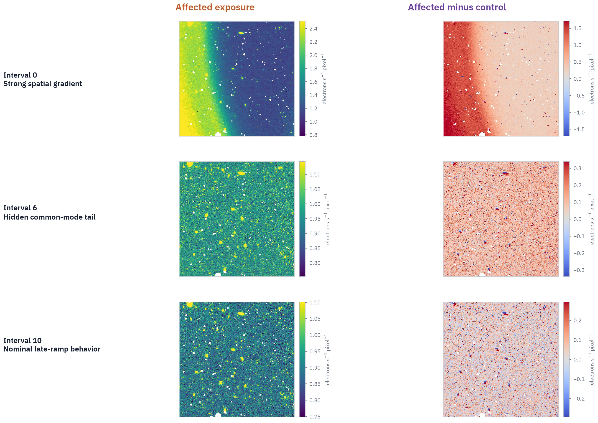
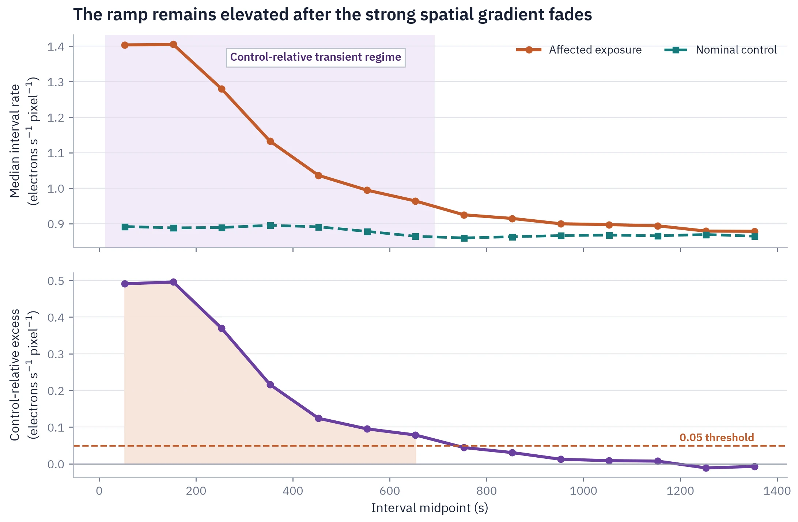

Read-level reconstruction
Chronological nondestructive reads were converted into interval-rate products with data-quality-aware masking.
Public-data case study 001
Why spatial inspection alone would accept affected reads - and bias the final count-rate product.
View the pinned analysis source and data manifestEngineering question
The early affected reads contained a strong left-right gradient. That feature became visually weak by interval 4, but visual stabilization did not establish temporal stability.
The analysis therefore treated spatial structure and detector-wide common-mode behavior as separate acceptance tests. A matched nominal exposure provided the control needed to distinguish scene-independent ramp history from normal late-ramp behavior.
Spatial evolution
The affected exposure, affected-minus-control residual, and nominal late-ramp behavior were examined at representative intervals.

Temporal diagnosis
Matched-control subtraction showed that the detector-wide excess remained above the stated engineering threshold through interval 6.

Analysis chain
Chronological nondestructive reads were converted into interval-rate products with data-quality-aware masking.
A nominal exposure separated the transient from ordinary spatial structure and late-ramp response.
Source-free masking, threshold variation, baseline variation, and a 2,000-replicate spatial block bootstrap tested classification stability.
All-read and post-transient ramp fits were compared with the archived CALWF3 count-rate product.
Engineering conclusion
Removing the transient reduced the reconstructed left-right asymmetry from 6.32% in the archived product to 0.40% in the post-transient fit. The post-transient source-free median was 0.11108 e-/s/pixel below the archived FLT median.
The combined temporal, spatial, control-relative, source-free, bootstrap, and refitting evidence supported a time-variable external background. An intrinsic HgCdTe material explanation was not required.
Reports and reproducibility
Both reports are generated from the same pinned analysis source. The technical edition adds method, data-quality, full spatial-sequence, and provenance appendices.
Apply the same discipline to your data